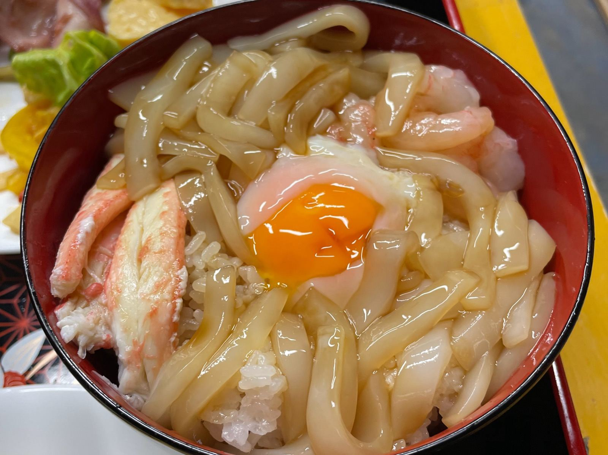
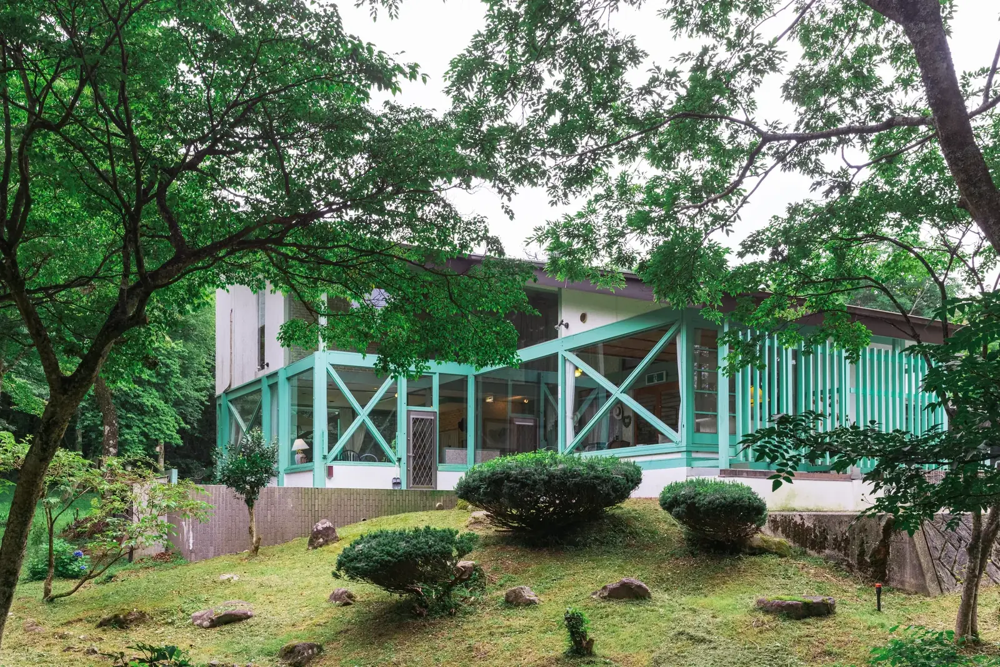

大山・米子周辺の海鮮丼ガイド

更新日: 2026年6月 ｜ カテゴリ: 観光ガイド
「このあたりで海鮮丼はどこで食べられますか？」という質問を、ゲストの皆さまからよくいただきます。
大山を拠点にするなら、日吉津・琴浦・境港の3エリアが選びやすく、いずれもハレ・マカワオから車で20〜50分ほどです。お帰りの日のお昼や、観光の途中に立ち寄りやすい順にまとめました。

1日1組・最大16名・全5室 ／ 境港まで車で約50分
日吉津エリア（車で約20〜30分）
山芳亭（やまよしてい）
イオンモール日吉津すぐ隣の海鮮市場内
車で約20〜30分
鮮魚店「山芳海産」が運営する海鮮丼専門店です。イオンモール日吉津のすぐ隣にある海鮮市場の中にあり、境港から直送された旬の魚介を丼に使っています。
営業時間・定休日・価格は変動することがあります。最新情報は各店の公式SNS等でご確認ください。
琴浦エリア（車で約20〜30分）
道の駅 琴の浦（物産館ことうら）
「海鮮料理きわみ」の極海鮮丼（鳥取県琴浦町）
車で約25〜30分
道の駅「琴の浦」内の物産館ことうらにある食事処です。「海鮮料理きわみ」の極海鮮丼は、日本海の旬の魚介をのせた丼で、ネタの種類が多いと評判です。山陰自動車道・琴の浦ICを降りてすぐの場所にあります。
住所: 〒689-2502 鳥取県東伯郡琴浦町別所1030-1 ／ 電話: 0858-55-6566
営業時間・定休日・価格は変動することがあります。最新情報は公式でご確認ください。
魚料理 海（うみ）
名物「鳴石丼」（鳥取県琴浦町・鳴り石の浜近く）
車で約20〜30分・東方向
琴浦町の海沿いにある海鮮料理店です。名物の「鳴石（なりいし）丼」は、地元で揚がるモサエビやマグロ・サーモンなどの海鮮をのせた丼です。店内から日本海を眺めながら食事ができます。大山から東方向へのドライブの途中に立ち寄れます。
住所: 〒689-2502 鳥取県東伯郡琴浦町別所267-1 ／ 電話: 0858-55-0889
営業時間・定休日・価格は変動することがあります。最新情報は各店の公式SNS等でご確認ください。
境港エリア（車で約50分）
海鮮処 空島（そらしま）
水木しげるロード内（鳥取県境港市）
車で約50分
水木しげるロード内にある海鮮料理店です。「海鮮三色丼」などの海鮮メニューがあり、水木しげるロードの散策とあわせて立ち寄れます。
営業時間・定休日・価格は変動することがあります。最新情報は各店の公式SNS等でご確認ください。
境港について
境港は日本海有数の漁港で、ベニズワイガニの水揚げ量日本一とも言われています。ここで水揚げされた魚介は、大山や米子、琴浦、日吉津といった周辺エリアにも届きます。
ドライブルートの参考
- 西方向: ハレ・マカワオ → 日吉津（山芳亭）→ 境港（海鮮処 空島・水木しげるロード）
- 東方向: ハレ・マカワオ → 琴浦（道の駅 琴の浦・魚料理 海）
- ※ 所要時間はいずれも目安です。道路状況・季節・時間帯により前後します
トップページへ戻る